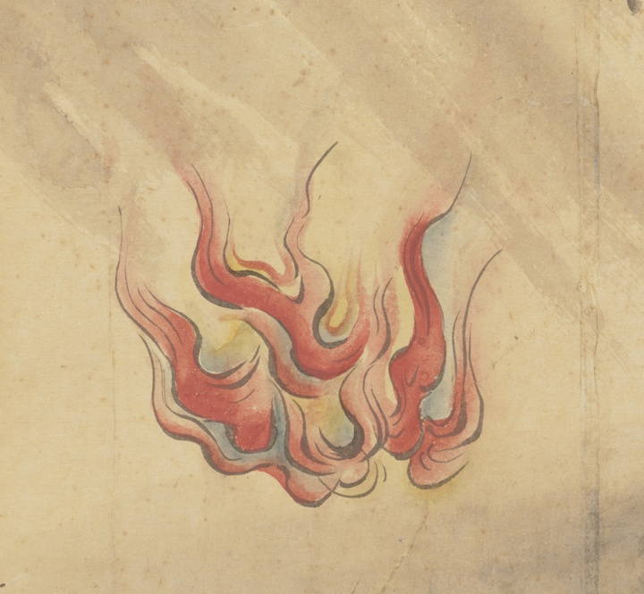

← 图鉴索引

人の半分ほどもある火の玉。左側に描かれた侍を追っている。
出典：親書誌：U426_nichibunken_0452：妖怪絵巻屏風／日付：2022／資源識別子：U426_nichibunken_0452_0001_0004
Copyright (c)2010- International Research Center for Japanese Studies, Kyoto, Japan. All rights reserved.